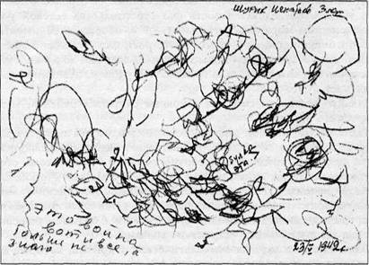

|
М.В.
Осорина. Секретный мир детей в пространстве мира взрослых. –
СПб.: Изд-во «Питер», 2000.-288 с.:(Серия «Мастера
психологии)
С.11-43
Глава 1.
Картина мира в колыбельных песнях и рисунках маленьких детей
Покидая материнскую утробу
новорожденный человек становится частью сложнейшей системы
пересекающихся, соседствующих, надстроенных друг над другом
и разнообразно взаимодействующих миров. Некоторые из этих
миров отчетливо видимы, другие — как, например, мир
психической жизни, — будучи незримыми, воплощаются в
материале других миров, становясь таким образом зримыми,
чувственно воспринимаемыми.
Для того чтобы научиться жить
и успешно действовать в мире, человеку, входящему в жизнь,
необходимо осознать представшую ему многомерную вселенную
как умопостигаемое целое, по отношению к которому он будет
самоопределяться, искать в нем свое место и прокладывать
свои пути. Это невозможно в отсутствие важнейших
пространственных и смысловых ориентиров, обобщающей схемы
мироздания и представления о месте своего нахождения в ней.
Любая человеческая культура обязательно несет в себе модель
мира, созданную данной этнокультурной общностью людей. Эта
модель мира воплощена в мифах, отражена в системе
религиозных верований, воспроизводится в обрядах и ритуалах,
закреплена в языке, материализована в планировке
человеческих поселений и организации внутреннего
пространства жилищ. Каждое новое поколение получает в
наследство определенную модель мироздания, которая служит
опорой для построения индивидуальной картины мира каждого
отдельного человека и одновременно объединяет этих людей как
культурную общность.
Такую модель мира ребенок, с
одной стороны, получает от взрослых, активно усваивает из
культурно-предметной и природной среды, с другой стороны,
активно строит сам, в определенный момент объединяясь в этой
работе с другими детьми.
Фольклористы, этнографы,
культурологи могут многое рассказать о моделях мира древних
египтян и ацтеков, австралийских аборигенов и народов
Сибири, — вопрос же о том, как и кем формируется и что
представляет собой модель мира современных детей, покрыт
мраком неизвестности в гораздо большей степени, чем модель
мира алеутских эскимосов.
Можно выделить три главных
фактора, определяющих формирование модели мира ребенка,
Первый — это влияние
«взрослой» культуры, активными проводниками которой являются
прежде всего родители, а затем и другие воспитатели.
Второй — это личные усилия
самого ребенка, проявляющиеся в разных видах его
интеллектуально-творческой деятельности.
Третий — это воздействие
детской субкультуры, традиции которой передаются из
поколения в поколение детей и чрезвычайно значимы в возрасте
между пятью и двенадцатью годами для понимания того, как
освоить мир вокруг.
Модель мира любого человека,
даже маленького ребенка, доступна для внешнего восприятия
только при том условии, что она каким-то образом воплощена,
«овнешнена», материализована — в виде рассказа, рисунка,
поступка и т. п. Анализируя их, опытный наблюдатель с
определенной степенью достоверности может реконструировать
внутреннее содержание душевной жизни другого человека, в
частности выяснить некоторые особенности его картины мира.
Если же взрослый (например,
воспитатель) хочет приобщить ребенка к определенной системе
мировоззренческих принципов, а значит, и определенной модели
мироустройства, то он обязательно должен воплотить ее в виде
словесного, изобразительного или поведенческого текста
(рассказа, песни, басни, картины, модели поведения и т. д.),
который максимально легко и полно может быть усвоен
воспитуемым.
В этой главе мы рассмотрим,
как начинается формирование модели мира у маленьких детей от
рождения до трех лет и от трех лет до пяти. Современные
родители часто совсем не представляют себе огромности объема
той внутренней работы, которую проделывает в этот период
ребенок, чтобы упорядочить свои представления о мире.
Поэтому на двух показательных примерах мы познакомимся с
двумя сторонами этого процесса. Сначала посмотрим, как может
быть осуществлена помощь со стороны взрослых и как может
быть передано" мировоззренческое содержание в тексте,
обращенном к маленькому ребенку. В этом плане поучителен
опыт народной культуры, в которой построение базовой системы
координат начиналось сразу после появления младенца на свет.
На примере анализа текстов русского материнского фольклора
мы познакомимся с традиционными способами помощи ребенку в
психологическом структурировании пространства окружающего
мира и осознании своего места в нем. А затем рассмотрим, как
начинается самостоятельное создание модели мира на примере
детских рисунков, когда ребенок сам овладевает культурным
инструментом — в данном случае изобразительным языком, через
который он выражает свое понимание мироустройства.
Инициаторами
мироустроительиой работы ребенка являются взрослые: именно
они вводят его в мир материальной культуры и родного языка,
которыми в разнообразных формах представлены важнейшие
пространственно-смысловые координаты, помогающие ребенку
организовать и осознать его непосредственный (в первую
очередь телесный) личный опыт.
В ходе социализации ребенок
испытывает множество явных и неявных направляющих
воздействий со стороны взрослых. Это системы запретов и
поощрений, выражающихся не только через язык, но и
существующих как данность и опредмеченных в самой
организации специфически детского пространства (детской
кроватки, детской комнаты, детской площадки) как участка
выгороженного и отграниченного от запретных пространственных
измерений. Не менее мощным средством формирования
пространственного сознания и источником базовых элементов
этнокультурной концепции мироустройства является родной
язык.
Лингвистическое упорядочение
непосредственного пространственного опыта ребенка начинается
уже на самых ранних этапах освоения им словаря и грамматики
родного языка. Кроме того, воспитатели используют
специальные «моделирующие» тексты, в которых ребенку в
образной и доступной форме дается смысловая схема
пространства мира. В этом плане особый интерес для психолога
представляет традиция народной педагогики.
Для русской народной культуры
было характерно стремление дать ребенку основные ориентиры
как можно раньше, впрок, задолго до того, как он будет этот
мир практически осваивать сам. Построение картины мира
ребенка начиналось уже в младенчестве через обращенный к
нему материнский фольклор — колыбельные песни, пестушки,
потешки и т. п. Они должны были обеспечить ребенку целостное
мировосприятие и ощущение своей включенности в общий порядок
мироздания, т. е. задать некую систему основных координат,
помогающих ребенку самоопределиться в жизненно важных
отношениях с миром,
Поначалу сам для себя ребенок
не существует, являясь как бы «слепым пятном». Первый этап в
осознании человеком факта своего существования в этом мире
начинается через других людей. Это они замечают, что «Я»
есть, выделив ребенка из фона окружающей жизни как значимую
фигуру и назвав его по имени. Такое личное обращение
постоянно присутствует в текстах материнского фольклора,
адресованных ребенку.
Пестушки, потешки, приговорки
сопровождают в народной культуре телесные игры с маленьким
ребенком.
«Сорока-ворона кашку варила,
деток кормила: этому дала, этому дала...» — так
приговаривает мать или няня, перебирая пальчики ребенка,
сидящего у нее на коленях. С психологической точки зрения,
важность этих игр неоценима. Таким путем взрослый помогает
ребенку формировать осмысленный образ собственного тела.
Образ своего телесного «Я» —
это база для развития личности малыша (равно как и для жизни
личности взрослого). Ведь наличие тела - это критерий
истинности утверждения «я существую». Одновременно тело -
это исходная точка отсчета, необходимая для ориентации
человека в окружающем физическом мире, и, как мы увидим
позже, главный измерительный прибор, который все люди
используют в процессе освоения физического пространства.
В телесных играх с детьми,
существующих в народной традиции, мать помогает ребенку
ощутить и эмоционально прожить отдельные части его тела в
живом контакте с ее руками. Пальцы рук ребенка, его ладошки,
предплечья, подмышки, головка и т. д. становятся персонажами
сюжетных игр, каждый из которых обладает собственным именем
и характером и исполняет определенную игровую роль.
Очень важно, что эти части
тела получают в игре свои названия — имена, которые
многократно повторяются на разные лады. Называние придает
частям тела ребенка новое качество существования, они
обретают новый статус. Сначала они становятся осмысленными
элементами образа телесного «Я», которое начинает
восприниматься как устойчивая совокупность тактильных,
кинестетических, зрительных, вестибулярных и тому подобных
ощущений, постепенно складывающаяся в целостный образ. А по
мере того, как ребенок научается не только непосредственно
чувствовать, но и знать, где и сколько у него глаз, ушей,
пальцев, ртов, носов, по мере того, как он запоминает их
названия, неизменность их местонахождения и
взаиморасположения, — у него начинает складываться схема
тела. Схема тела представляет собой уже обобщенные и
объединенные в знаковую структуру знания о теле — нечто
вроде крупномасштабной карты телесного ландшафта, на которой
обозначены наиболее важные пункты. Построение такой «карты»
собственного тела, несомненно, является продуктом
аккультурации и систематизации психотелесного опыта ребенка,
целенаправленно происходящих в процессе его общения с
матерью или няней.
Осмысление ребенком
устройства своего телесного «Я» абсолютно необходимо для
нормального умственного и личностного развития. Не случайно
в народной культуре этот процесс направлялся и
контролировался традицией. Столетиями передавались из
поколения в поколение тексты материнского фольклора,
обращенные к детям. В них оказались зафиксированными
наиболее удачные по содержанию и по форме способы обучения
ребенка пониманию собственного тела. Образные, рифмованные,
легко запоминающиеся тексты пестушек, потешек, пальчиковых
игр были общеизвестны. А потому даже самая глупая и
нерадивая воспитательница, которая их использовала,
волей-неволей развивала ребенка в соответствии с заложенной
в эти тексты культурной программой освоения пространства
телесного «Я».
Если мы обратимся к другим
жанрам материнского фольклора, например к колыбельным
песням, то и там обнаружим присутствие культурных программ,
целью которых является символическое представление основных
пространственных координат мира, куда вошел ребенок после
появления на свет,
Упорядочивание,
структурирование пространства начинается с фиксации точки, в
которой находится ребенок. В колыбельных песнях часто очень
подробно и преувеличенно положительно описывается колыбель —
первое собственное место ребенка в этом мире, его исходное
личностное пространство.
Висит колыбель
На высоком на крюку.
Крюк золотой,
Ремни бархатные,
Колечки витые,
Крюки золотые .
И золотые крюки, и бархатные
ремни, конечно, не бытовые реалии крестьянской жизни. Они
образно выражают родство детской колыбели и царского трона.
Ребенок здесь подобен маленькому божеству, окруженному
ценными дарами — праздничной едой:
Ой, ляльки-ляльки-ляльки,
В изголовье крендельки,
В ручках яблочки,
В ножках прянички,
По бокам конфеточки,
Винограду веточки .
В колыбельных песнях этого
типа утверждается высшая качественность и ценность
занимаемого ребенком места, а младенчество описывается как
идеальное состояние благополучия[1].
Действительно, для
полноценного психического развития ребенку исключительно
важно утвердиться в том, что место, занимаемое его «Я» в
этом мире, — самое хорошее, мама — самая лучшая, дом — самый
родной. Главной личностной задачей младенческого периода
является формирование так называемого «базового доверия к
жизни» — интуитивной уверенности человека в том, что жить
хорошо и жизнь хороша, а если станет плохо, то ему помогут,
его не бросят5. Уверенность в своей желанности,
защищенности, в гарантированности положительного отклика
окружающего мира на его нужды младенец приобретает в ходе
повседневных взаимодействий с матерью. Постоянство
присутствия матери, точность понимания ею нужд младенца и
скорость отклика на них, теплота отношения к ребенку,
многообразие телесного и словесного общения с матерью имеют
очень важный смысл для всей его будущей жизни. На этом
глубинном чувстве базового доверия к жизни будет основан
потом жизненный оптимизм взрослого, его желание жить на
свете вопреки всем невзгодам и его иррациональная
уверенность в том, что все кончится хорошо вопреки
обстоятельствам. И наоборот, отсутствие этого чувства может
в будущем привести к отказу от борьбы за жизнь даже тогда,
когда победа в принципе возможна.
В материнском фольклоре
колыбельных песен исходной точкой отсчета в мировой системе
координат становится ребенок, лежащий в своей колыбели, а
пространство окружающего мира выстраивается вокруг ребенка
через противопоставление теплого дома-защиты, внутри
которого находится колыбель с младенцем, и опасного внешнего
мира — темного леса, луга, речки, куда до поры до времени
ребенку ходить не надо.
Эти два мира разделены
границей, которую не должен переступать ребенок. Она
обозначается понятием «край»:
Баю-баюшки-баю,
Не ложися на краю:
Придет серенький волчок,
Он ухватит за бочок,
И потащит во лесок,
И положит под кусток.
Внешняя граница дома уже
принадлежит к наружному опасному миру. Беспечная домашняя
курица, которая по неразумию устроилась спать на завалинке —
т. е. снаружи дома? — может потерять всю свою красу из-за
разбойного нападения совы — птицы лесной:
Черна курица ряба
На завалинке спала,
Прилетела сова,
Серьги вывернула,
Перья выщипала.
Вообще, фольклорное понятие
края как границы перехода из своего пространства в
пространство внешнего мира — опасного, страшного —
символически оформляет также и повседневный опыт маленького
ребенка.
Тему края как важнейшую
телесно-пространственную проблему малыш начинает проживать
очень рано. Так как младенец обычно лежит на чем-то
возвышающемся, ему есть куда падать через край, который
ощущается им как граница перепада высот, переход которой
грозит падением. Эта реальная опасность прежде всего
познается в течение двух первых лет жизни. Телесные
переживания такого рода становятся для ребенка живым
психологическим наполнителем фольклорной идеи края как
опасной грани двух разных миров. С точки зрения народной
традиции, подходить к ней, а тем более преждевременно
переходить ее, пока ребенок мал и не готов к этому, — никак
нельзя.
Надо сказать, что понятие
«край» является необыкновенно психологически емким. Среди
ключевых слов, необходимых для формирования личности
ребенка, ему надо отдать одно из первых по значимости мест.
Одна из сфер жизни ребенка,
где значимо понятие «край», — это его телесно-двигательное
поведение, о котором мы уже упоминали. Тут опознание края
как границы конкретного пространства — своего и чужого,
освоенного и неизвестного, комфортного и опасного —
проживается ребенком через опыт собственного тела.
Кроме того, понятие «край» (в
научной терминологии — «граница», «контур») является
центральным для понимания того, как формируется у маленьких
детей восприятие окружающего мира и самих себя.
Восприятие - это базовый
познавательный процесс, который строится на основе
совместной работы отдельных органов чувств. Результатами
такой совместной деятельности зрения, осязания, слуха и
т.д., являются образы восприятия — своего рода «картинки»
реальности. В общей психологии хорошо известно, что для
построения образа воспринимаемого объекта особую
информационную ценность имеет его контур.
Как только познающий
ребенок-наблюдатель становится способен выделять контуры,
т.е. края отдельных вещей, из общего фона окружающего мира,
его восприятие делается предметным. Он видит мир уже не как
хаос невнятных движущихся и статичных пятен (что свойственно
совсем крошечным детям), а как вместилище отдельных
предметов, каждый из которых имеет свои очертания, границу,
отделяющую его от фона всего остального.
Такая способность к
вычленению края предмета, помогающая воспринять его как
отдельную целостность, постепенно формируется у ребенка на
основе его опыта манипулирований предметами. Как утверждал
физиолог И. М. Сеченов, движущаяся рука всегда поначалу учит
глаз: познавательные действия рук ребенка, которые хватают,
ощупывают края предмета, обучают глаза такой же стратегии
поведения. Глаза вскоре научатся исследовать контур видимого
объекта при помощи похожих на ручные «ощупывающих» движений,
но уже на расстоянии. Каждый предмет, приобретающий таким
образом свое место, свою форму и края, отличен для ребенка
от других. Так появляется у предмета свое лицо, а несколько
позже свое имя — название, помогающее ребенку опознавать
его.
Итак, выделение края как
границы объекта определяет успешность формирования
предметного восприятия. На этом строится способность ребенка
ориентироваться в пространстве внешнего мира.
Обобщая описанное выше
содержание психического опыта маленьких детей, связанного с
темой края, можно сказать, что «край», видимо, является
одной из самых ранних и прочувствованных ребенком
характеристик пространства, которая положена в основание его
миропонимания.
Тем более поразительно, с
какой психологической чуткостью тема края в материнском
фольклоре введена в адресованные ребенку тексты и
символически осмыслена народной традицией. Здесь «край»
играет роль ключевого элемента в
пространственно-символических «картах мира», которыми
традиционная культура взрослых снабжает маленьких детей
загодя.
В колыбельных песнях слово
«край» становится понятием, обозначающим границу мира своего
— домашнего, защищенного — и чужеродного — внешнего,
опасного.
Колыбельные песни слушали не
только младенцы, но и дети постарше, уже имевшие
самостоятельный опыт познания реальных краев, кромок, границ
всевозможных предметов, опыт собственных падений и
переступаний через край, познавшие неустойчивость
поставленных на краю предметов, обоснованность родительских
запретов, связанных с реальным нахождением ребенка на краю
чего-либо, Все это живое многообразие индивидуального опыта
насыщало для ребенка понятие «край» личностным смыслом.
С другой стороны, приобщение
ребенка к фольклорному пониманию темы края поднимало его
личный опыт на высоту культурно-символического обобщения и
придавало этому понятию еще и магический смысл. Такие
смысловые оттенки способен уловить ребенок старше двух-трех
лет — в этом возрасте начинается активное становление
символической функции сознания, что проявляется и в
продуктах собственного творчества маленьких детей.
Оставим пока колыбельные и
забежим немного вперед, когда ребенок подрастает настолько,
чтобы слушать и понимать сказки. Мы сразу обнаружим, что в
народных сказках тема края как границы между домом и внешним
миром очень подробно психологически проработана. Даже из
небольшого репертуара сказок, известных современному
городскому младшему дошкольнику, он может узнать, как
по-разному можно пересекать эту границу в зависимости от
обстоятельств и степени готовности главного героя к выходу
за пределы родного дома.
Колобка, румяного и
«готового», «родители» сами положили на окошко — границу
дома и наружного мира — студиться. Он лежал-лежал, ему
скучно стало. И тогда он — хоп! — с окошка на завалинку, с
завалинки во двор, со двора за ворота — и покатился по
дороге. Итак, он покинул родной дом уже готовым и по
собственной воле выкатился на дорогу жизни, где с ним и
случились драматические происшествия, связанные с тем, как
Колобок поступал при встречах с другими персонажами этой
сказки.
Иное дело — младший сын из
сказки «Кот в сапогах». Он совсем молод, хотя и получил
наследство от умерших родителей и должен выходить из дома на
собственную дорогу жизни, так как два старших брата
унаследовали дом и мельницу. Но, как сказал бы современный
психолог, младший сын сталкивается с типичными юношескими
проблемами. Он завидует старшим братьям и тяжело переживает,
что придется выходить в мир с неизвестно чем — котом в
мешке. Ему кажется, что родители его обделили. Основные
события сказки связаны с тем, как постепенно сын открывает
для себя ценность родительского наследства — ведь они
оставили ему волшебного помощника, который добывает своему
хозяину и богатство, и жену, и власть.
А вот бедный
Мальчик-с-Пальчик и его братья совсем не готовы выходить в
мир, они для этого еще совсем малы. Отец уводит их из
родного дома, потому что их нечем кормить. Поэтому для этих
маленьких детей внешний мир и предстает в виде чащи темного
леса, где они попадают в дом к людоеду.
Итак, мы видим, что на новом
возрастном этапе жизни ребенка-слушателя тема края
развивается дальше в сказочных фольклорных текстах, где
раскрываются связанные с ней новые психологические задачи.
Это уже не край как магическая грань, к которой нельзя даже
приближаться, а граница, которую когда-нибудь придется
пересечь, чтобы выйти в мир взрослой жизни.
Кстати, если мы вернемся
назад, в мир колыбельных песен, то заметим, что только
младенцу за пределами родного дома грозят опасности, так как
он мал, «не готов». Взрослые же люди, равно как и некоторые
животные и мифологические персонажи, могут свободно
перемещаться и действовать во внешнем мире. Оттуда они
приносят ребенку подарки, еду, здоровье, сон, а также
сапожки, в которых он потом самостоятельно выйдет на дорогу
жизни.
Во многих колыбельных песнях
перед ребенком разворачивается перспектива его будущей
самостоятельной, взрослой жизни, где он обретет семью, будет
работать, кормить и содержать своих собственных детей и
родителей. Здесь ему задается структура социального
пространства, в котором он найдет себе место, а также
нравственные категории его взаимоотношений с младшими, со
старшими и со святыми покровителями. То есть закладывается
система отношений в пространстве мира людей, определяются
цели жизни ребенка, а также ее границы и ее конечность.
Таким образом, колыбельная
песня заранее дает ребенку простейшую схему картины мира,
знакомит с расстановкой сил, персонифицированных в образах
людей, животных, мифологических персонажей, и с главными
принципами, которыми должен руководствоваться человек,
вступающий на дорогу жизни.
Поговорим теперь о
психологических особенностях живого восприятия фольклорных
текстов ребенком. Кроме их содержания, многое предопределяет
сама ситуация, в которой они исполняются.
Колыбельную песню мать,
бабушка или няня поет вечером, чтобы ребенок поскорей
заснул. С психологической точки зрения, он находится в это
время в особом душевном состоянии предсонья: тельце
постепенно расслабляется, глазки закрываются, собственные
мысли в этом возрасте еще отсутствуют и не мешают,
внимательно сосредоточиться на голосе взрослого. Такому
сосредоточению помогает еще и то обстоятельство, что поющий
голос является главным на фоне окружающей тишины и темноты.
Можно сказать, что состояние ребенка подобно тому, что
бывает у людей при гипнотическом внушении. Ритм колыбельной
песни, обычно соотнесенный с ритмами дыхания и сердцебиения
матери и ребенка, играет очень важную роль в открывании души
навстречу поющему голосу.
Внутренняя настройка на
другого человека через ритм его движений — это самый
древний, универсальный и самый успешный способ
психологического присоединения к партнеру. Таким образом
происходит объединение двух людей в единую
энергоинформационную систему, ведомую общим ритмом.
Обучается ребенок такой настройке еще в утробе матери, где
ритмические процессы в его организме синхронизируются с
ритмами ее жизнедеятельности[2],
а использует эту способность всю дальнейшую жизнь. Поэтому
интонация, слова, образы песни беспрепятственно проникают
внутрь одушевленного тельца ребенка, буквально пропитывая
его и закрепляясь в самой глубине его существа. Ребенку не
обязательно понимать, он должен просто впустить в себя и
помнить. В дремотном состоянии в дремучей глубине его души,
которая и потом, когда он повзрослеет, никогда не будет
полностью доступна его собственному сознанию, угнездятся
древние, целостные, мощные и емкие образы, являющиеся
сгустками самых главных жизненных смыслов, передающихся в
народной традиции. Пространственно-символические схемы,
организующие эти смыслы в фольклорном тексте, отражают
народную модель мироустройства. В дальнейшем они станут
основой формирования символического мышления самого ребенка,
без которого не может быть понимания мира и себя, осознания
смысла своего существования.
Вечерняя убаюкивающая песня
когда-то сопровождала ребенка на протяжении нескольких
первых лет его жизни. Она присутствует в быте многих семей и
сейчас. Когда ребенок становится старше, к ней
присоединяются рассказывание сказок и историй, задушевные
разговоры о самом важном на сон грядущий. А сон, как
известно, дан человеку и для отдыха, и для глубинной
обработки той информации, которая накопилась за день. Причем
то, что говорится перед сном, имеет особо значимое влияние
на состояние души спящего и содержание его снов. Поэтому
воспитатели далеко не случайно знакомили ребенка с текстами,
имеющими мировоззренческое значение, раскрывающими принципы
жизнеустройства, именно перед сном. Ведь они должны были
войти глубоко в душу и сохраниться там на всю жизнь. Тогда
понятно, почему, отвечая на вопрос о главном человеке,
который определил строй их души, многие русские писатели
называли свою няню и ее вечерние сказки.
Интуитивное стремление
взрослого человека, принадлежащего к традиционной народной
культуре, как можно раньше дать ребенку понятийно-образную
систему опор для его мировосприятия, психологически точно
соответствует такому же стремлению со стороны самого
ребенка.
Больше всего ребенок боится
хаоса обрушивающихся на него впечатлений, событий внешней и
внутренней жизни, которые ему нужно как-то) организовывать,
чтобы их понять и с ними совладать. Для этого ребенку крайне
необходимы образно-понятийные опоры, к которым он будет
привязывать изменчивые события текущей жизни, организуя их в
некое понимаемое целое.
Традиционная народная
культура обеспечивала ребенка такими опорами в разнообразных
формах, последовательно и постепенно создавая
мировоззренческий фундамент для формирующейся личности.
Таким образом удовлетворялась одна из важнейших человеческих
потребностей — потребность в смысле, т. е. в понимании
окружающего мира и осознании своего места и назначения в
нем.
В практической психологии и
психотерапии хорошо известно, что раннее детство — это время
установления базовых отношений ребенка с миром. Не случайно
говорят, что до пяти лет закладываются основы личности.
Воспитателям маленьких детей
важно осознать содержание песен и речей, с которыми они
обращаются к ребенку. Особое внимание надо уделять текстам,
в содержании которых кроется мировоззренческий смысл.
Многие взрослые считают, что
фольклорные тексты подходят детям, потому что они просты. В
сознании этих взрослых отождествляется народное, простое и
детское. Но суть не во внешней простоте. Психологическое
значение этих текстов связано с их своеобразной магической
силой. Фольклорные образы необыкновенно емки, а словесные
формулы недаром похожи на заклинание. Они легко проникают в
самые глубины души, в ее бессознательные слои, потому что
говорят на их языке. Говорят о самом важном для ориентации
этой души в земной жизни, о том, что кристаллизовалось в
материнском фольклоре из огромного душевного опыта многих
поколений людей, которые когда-то тоже учились жить на
свете.
Как мы уже отметили в начале
этой главы, стремление упорядочить свои знания о мире, а
затем обобщить их в виде умопостигаемой модели мироздания
свойственно и самим детям. Каждый маленький ребенок
интенсивно работает над этой проблемой с того момента, когда
он начинает овладевать языками, с помощью которых можно
моделировать мир, создавая его символический аналог в виде
текста — словесного высказывания, нарисованной картинки,
постройки, вылепленной фигурки и т. д.
В возрасте между двумя и
тремя годами ребенок использует для этого не только
словесный язык, который он активно осваивает. В его
постройках из песка, в пространственных конструкциях из
кубиков или других материалов проявляются его представления
о мироустройстве. В два с половиной — три года роль
моделирующей знаковой системы в мироустроительном творчестве
ребенка также начинает исполнять и графический язык — т. е.
детское рисование. К сожалению, родители и воспитатели
детских садов мало ценят рисунки маленьких детей,
только-только выходящих из стадии каракульного рисования.
Обычно взрослые не понимают и психологического смысла
огромной интеллектуальной и духовной работы, которую
проделывает рисующий ребенок в возрасте между тремя и
четырьмя годами. Хотя именно на примере раннедетских
рисунков взрослый может наглядно увидеть последовательность
фаз строительства детской умозрительной картины мира.
Умозрительной — т. е. обобщающей достигнутое собственным
умом понимание того, как устроен мир. Это понимание ребенок
воплощает в своих рисунках и тем самым дает нам возможность
хотя бы частично увидеть результаты грандиозной работы,
невидимо совершающейся в его душе.
Давайте кратко рассмотрим
основные открытия ребенка, которые фиксирует его рисунок.
Как известно, первой стадией
детского рисования являются каракули, т.е. графические
следы, которые оставляет палец, карандаш, фломастер или
другой инструмент на поверхности листа бумаги, стола, стены
и т. п. Это точки, пятна, линии разной формы. Первые
хаотические каракули ребенок начинает делать в возрасте
около года. Постепенно у него налаживается
зрительно-моторная координация, когда глаза привыкают
следить за графическими движениями руки. Ребенок с большим
удовольствием испещряет листы бумаги «каряками-маряками».
Одно из самых важных
психологических открытий, которые делает ребенок между годом
и двумя, состоит в том, что он может целенаправленно
оставлять видимые всем следы своего присутствия в этом мире.
«Каряки-маряки» послушно появляются из-под кончика его
карандаша и остаются на бумаге. Они свидетельствуют о том,
что ребенок освоил пространство листа, отметился, застолбил
там свое пребывание, опредметил себя в этих линиях, точках,
пятнах.
В период между двумя и двумя
с половиной годами ребенок делает следующий шаг: он
обнаруживает, что лист бумаги имеет края. Если раньше рука с
карандашом могла легко выехать за пределы листа, то теперь
ребенок начинает реагировать на его края (вспомним
колыбельные песни). Приближаясь к ним, линии каракулей
следуют вдоль краев листа, огибают его углы, стремятся
вернуться внутрь листа. То есть ребенок уже учитывает
границы ситуации, в которой разворачиваются его действия.
Между двумя с половиной и
тремя годами в детском рисовании совершается революция.
Ребенок неожиданно обнаруживает, что его «каряки-маряки»
могут быть похожими на что-то, могут что-то значить. Так
ребенок открывает для себя знаковую функцию рисования —
возможность линий, пятен, точек обозначать собой нечто
другое, помимо того, что есть они сами. Они становятся
элементами графического языка, при помощи которых ребенок
начинает создавать первые изображения людей, животных,
предметов и даже абстрактных идей. Несовершенство
графической формы не мешает сути дела — теперь ребенок
открывает для себя возможность говорить на изобразительном
языке обо всем, что для него важно. Замечательный образец
того, как это происходит, представлен на рисунке 1-1. Это

Рис. 1-1. «Это война, а
посередине булка» (Шурик Игнатьев, 3 года),
рисунок трехлетнего мальчика
Шурика Игнатьева, опубликованный в альбоме «Рисуют дети
блокады» . Рисунок типичен и одновременно интересен тем, как
маленький автор, уже открывший для себя знаковую функцию
рисования, использует старые каракульные формы для решения
совершенно новой, уже символической задачи. Трехлетний
голодающий блокадный ребенок пытается передать свое
мироощущение, рассказать о том, что он видит вокруг себя и о
чем мечтает. Рисунок называется «Это война, а посередине —
булка». Тут два главных героя. Они выражают две главные
идеи. Расползшаяся масса закорючек, обозначающих «Войну», —
это ужасное состояние мира, в котором пребывает ребенок. А
комочек внутри этой массы — «Булка», о которой ребенок
мечтает. Такова картина мира блокадного мальчика, поражающая
лаконичностью описания: это страшная реальность, в центре
которой находится его мечта.
Первые детские изображения
хаотически раскиданы по листу бумаги — ребенок рисует там,
где есть свободное место, и поэтому легко поворачивает лист
под удобным для себя углом. Для него нет ни верха, ни низа.
На этом этапе ребенку важно,
что он может нарисовать того, кого хочет. Это похоже для
него на магический акт: «Встань передо мной, как лист |
перед травой». Захотел — нарисовал, вызвал из небытия,
заставил быть.
Ребенок наслаждается новой
способностью населять пространство листа бумаги любыми
персонажами, подвластными ему как своему творцу. А
интеллектуальная задача, которую ребенок решает, состоит в
том, чтобы выделить необходимые и достаточные признаки,
нужные для сущностной характеристики персонажа, — чтобы
человек отличался от собаки, собака — от мышки или птички.
(«Человек ходит стоя, а собака — лежа. У человека две ноги,
а у собаки много и еще хвост».)
Однако уже в возрасте между
тремя с половиной и четырьмя годами ребенок делает следующий
шаг: он начинает представлять пространство листа как
пространство Мира, который должен быть определенным образом
организован для того, чтобы туда можно было поселить
персонажей. Под ногами у них обязательно должна быть земля,
а над головой должно быть небо.
Линия «земли» может быть
проведена коричневой или зеленой чертой, но может быть
«набрана» из вертикальных черточек — травинок, из цветочков
или грибочков, Для ребенка важно, чтобы была реализована в
каком-либо виде идея почвы под ногами, опоры, на которой все
держится.
Линия «неба» может
изображаться синей чертой или полосой, но может состоять из
горизонтального ряда птичек, самолетов, звезд, солнц,
облаков — все эти элементы воплощают идею неба, верха,
находящегося как крыша надо всем (см. рис. 1-2 и 1-3).
А между небом и землей
размещаются в ряд персонажи. Они стоят таким образом, чтобы
каждый был в полноте своей самости — целиком, во весь рост и
не загораживая друг друга.
Такая композиция называется
ленточной, или фризовой. Первым описал фризовую организацию
рисунков детей-дошкольников советский искусствовед А. В.
Бакушинский в 1925 году. Она заинтересовала его как историка
искусства своим сходством с композиционными принципами
древнеегипетских изображений.
Для психолога же важно то,
что фризовая композиция является первой попыткой ребенка
построить систему пространственных координат, которая
организует картину мира, создаваемого им на листе бумаги. В
этом мире главным структурообразующим принципом является
вертикаль - разделение листа на верх, середину и низ. Это
древнейший в истории человечества принцип символической
организации пространства, который воплощен в различных
культурах в образе Мирового Древа с его кроной (верх),
стволом (середина) и корнями (низ). Как мы видим, это также
самая ранняя в истории развития отдельного человека (в
онтогенезе) пространственная схема, при помощи которой
ребенок пытается построить модель обитаемого мира.
По мере того как ребенок
взрослеет, вертикальная координата в его рисунке все
отчетливее приобретает символическое значение оси ценностей.
В культуре взрослых людей, к которой постепенно приобщается
ребенок, тема неба, т. е. высокого, — связана с идеями
Божественного, духовного, светлого, развитого,
интеллектуального (высокие чувства, помыслы, стремления и т.
п.).
Тема земли, т.е. низкого, —
воплощает идеи телесного, плотского, физиологического,
сексуального, дремучего, темного и т. д.
Несколько позже, чем
вертикаль, для ребенка начинает становиться значимой
горизонтальная ось рисунка, которая все больше связывается с
идеей течения времени.
Нужно отметить, что
раннедетские изображения людей всегда обращены лицом к
зрителю. Профильные рисунки появляются позже. Изображение
человека в профиль ребенок начинает использовать для того,
чтобы передать идею направленного движения. По мере того как
у ребенка появляется желание рисовать все более сложные
сюжетные ходы во взаимоотношениях изображаемых героев, он
все больше использует горизонтальную ось как линию,
показывающую направление течения времени. Это обычно
происходит между четырьмя и пятью годами.
Не углубляясь в дальнейшие
подробности развития детского изобразительного языка,
отметим только, что у нормально развивающегося ребенка к
пяти годам в основном уже складывается индивидуальная
символическая система, позволяющая ему использовать
пространственные и цветовые коды для передачи значимой
информации при помощи рисунка.
Пространственная близость или
удаленность персонажей друг от друга, соотношение их
размеров, особенности геометрических форм, общность цвета и
атрибутов и другие параметры рисунка несут смысловую
нагрузку. Они служат для выражения душевной близости или
отчужденности персонажей рисунка, их значимости или
малоценности, отражают их характеры и свойства, о которых
хочет заявить маленький автор. Таким образом, в возрасте
между тремя и пятью годами ребенок осваивает изобразительный
язык как одну из важнейших знаковых систем, при помощи
которой он строит свою версию картины мира.
Но рисунки ребенка — это
только одна из многих форм отображения того, что
представляет собой его мировоззрение. Существует множество ,
специфических детских способов обобщения и систематизации
представлений об окружающем мире. Он делает это в фантазиях,
играх, танцах, песнях, лепке и других видах индивидуальной
творческой деятельности. Нередко взрослые даже не замечают,
как совершает ребенок непрерывную мироустроительную работу,
позволяющую ему сохранить ощущение устойчивости,
правильности и осмысленности своего бытия.
Бывает, что взрослые, сами
того не сознавая, пытаются разрушить результаты этой работы
ребенка. Например, довольно часто педагоги борются с «линией
земли» и «линией неба» в рисунках дошкольников; добиваются,
чтобы ребенок полностью закрашивал изображаемые небо и землю
как плоскую декорацию, на фот которой должны располагаться
персонажи его рисунка. Взрослому такой способ рисования
кажется «нормальнее» и «правильнее» детского,
Здесь налицо столкновение
двух совершенно разных интеллектуальных и мировоззренческих
концепций, которые определяют построение рисунка, Одна -
детская, другая - взрослая,
Ребенок в своем рисунке
пытается отобразить конструкцию мира, — в частности,
необходимость четкого различения идеи верха и идеи низа, по
отношению к которым должен ориентировать свою позицию
человек. (Тут уместно напомнить афористичное выражение
взрослых о том, как надо жить на свете, где присутствует та
же пространственная концепция; надо жить так, чтобы ногами
крепко стоять на земле, а головой быть в небе.)
Склонность ребенка передавать
в рисунке не конкретные зрительные впечатления, а совокупный
результат личного знания о мире является характернейшей
чертой рисования дошкольников. Они используют
изобразительный язык как знаковую систему, при помощи
которой можно моделировать мир на листе бумаги, выделяя
значимые объекты и фиксируя отношения между ними. Поэтому
рисование в дошкольном возрасте является одним из наиболее
эффективных способов упорядочивания системы детских
представлений о мире.
Подавляющее большинство
взрослых не понимает того, что ребенок строит свой рисунок
как интеллектуальную модель мира, а не его зримый аналог.
Для них является важной внешняя похожесть рисунка на то, что
видят наши глаза. Взрослым не нравится, что ребенок рисует
«идею» неба, «идею» земли при помощи условной линии или
полосы, не так, как они видны в натуре или привычно
изображаются на рисунках взрослых людей. Поэтому педагоги и
родители требуют от маленького ребенка создания
«правильного», с их точки зрения, изображения,
соответствующего также взрослым критериям «красивого».
Таким образом, взрослые
подталкивают ребенка к тому, чтобы он рисовал в соответствии
с принципами построения изображений, свойственными культуре
взрослых, хотя эти принципы достаточно долго остаются
чужеродными психической организации ребенка и внутренне ему
непонятны. Тем самым взрослые заметно обедняют детское
рисование, лишая его наиболее высокой, «миррустроительной»
функции, а детское творчество — внутренней
самостоятельности.
После пяти лет личные усилия
отдельного ребенка в попытках моделировать мир обычно
дополняются возможностями, которые несет в себе детская
субкультура. В дальнейшем мы еще неоднократно будем говорить
о том, каким образом и зачем дети объединяют усилия, чтобы
упорядочить свои отношения с многомерным, сложным,
противоречивым, непонятным, страшным и вместе с тем
притягательным миром вокруг, как внутри мира взрослых людей
они строят пространство детского «космоса», соответствующего
их логике и их потребностям.
Такое культурно-психическое
строительство может находиться в сотрудничестве и в
противоречии со взрослым миром. Обычно дети весьма высоко
ценят мировоззренческую помощь взрослых и часто добиваются
ее, используя разные приемы — от прямых вопросов до тонких
дипломатических ловушек. Если же они не находят отклика на
свои запросы, то обходятся собственными силами. Даже малый
возраст в этом не помеха.
Глава 2.
Освоение пространства дома: материализация «Я».
Понятие «дом» для человека
имеет много смыслов, слитых воедино и эмоционально
окрашенных.
Это и кров, убежище, защита
от непогоды и напастей внешнего мира, здесь можно укрыться,
спрятаться, отгородиться: «Мой дом — моя крепость».
Это и место жительства,
официальный адрес, где человека можно найти, куда можно
писать письма, — точка в пространстве социального мира, где
он обретается: «Давайте обменяемся адресами, скажите мне
свои координаты!»
Это и символ жизни семьи,
теплого домашнего очага — грустно, когда дом пуст, когда
тебя никто не ждет; тяжко быть бездомным сиротой.
Он воплощает также идею
интимного, личностного пространства, обиталища человеческого
«Я». Вернуться домой — это вернуться к себе: «Я у себя.
Заходи ко мне, посидим!»
Дом как символ человеческой
личности присутствует как в общекультурной традиции, так и в
символике психической жизни отдельного человека. Если
кому-то снится, что он бродит по странным помещениям
знакомонезнакомого дома, то при анализе сновидения часто
обнаруживается, что это было путешествие по разным
внутренним пространствам и закоулкам собственного «Я».
Тело человека тоже можно
считать плотским домом его души, а в обиходных речевых
формулах голова часто представляется домом его психики: «У
этого ума — палата, а у того, наверное, не все дома,
кажется, у него крыша поехала!»
Последнее пристанище тела —
гроб — в народном языке называется «домовина», так же и
бездыханное мертвое тело в народной поэтике сравнивается с
опустелым домом без хозяина.
Можно сказать, что дом для
человека является совокупностью вложенных друг в друга
разновеликих пространств — от размеров собственного тела до
пределов родины, Земли и даже Космоса: «Наш дом — Россия»,
«Земля — наш общий дом». Не случайно в народной культуре
устройство дома как микрокосм воспроизводит структуру
мироздания.
Получается, что
психологический объем идеи дома в переживаниях человека
имеет пульсирующие границы, то расширяющиеся до размеров
вселенной, то постепенно сужающиеся до пределов собственного
«Я». Но во всяком случае дом всегда остается местом, где
находится человек, центром его пространственного бытия.
Введем здесь понятие «место»,
которое еще неоднократно встретится в тексте этой книги, так
как оно имеет важное, насыщенное содержанием значение в
детской субкультуре. Характерна типичная для детей речевая
формула: «Пойдем, я покажу тебе одно место» Разговор о нем
можно начать с того, что категория места является первичной
и важнейшей в детском познании предметного мира. Поначалу
место — это точка, участок, локус пространства, где
находится нечто. Для ребенка «быть существующим» — значит
занимать определенное место в этом мире. Если нечто есть, то
оно обязательно имеет свое место в пространстве. Наличие
места является для детей необходимым и достаточным признаком
существования.
Когда ребенок совсем мал, он
живет по принципу «что упало — то пропало», т. е. что
исчезло из поля его зрения, того больше не существует.
Для младшего дошкольника
место вещи является ее неотъемлемым атрибутом. Если место
есть (специально оставлено, как-то обозначено), а предмет
временно отсутствует, он все-таки существует. Если же это
место занято кем-то другим, то этот другой начинает
существовать в-место отсутствующего, за-мещая его и, таким
образом, вытесняя его из жизни, лишая возможности быть.
Поэтому забота о собственном месте в доме, тревога и
раздражение, которые возникают у ребенка, когда он видит,
что кто-то хочет занять его место, — это есть попытка
обеспечить свое существование, утвердить факт своего
присутствия в текущей жизни.
Взрослые плохо понимают эту
детскую проблему: бывает, играя, нарочно дразнят и пугают
ребенка тем, что сядут на его стульчик или лягут в его
постельку, В таких случаях дети обычно реагируют очень
эмоционально: пугаются, обижаются, злятся. Взрослых смешит
то, что ребенок не понимает различия в размерах: разве может
поместиться большой человек в маленькой детской кроватке?
Действительно, понимание соразмерности величин предметов
станет доступно ребенку, когда он подрастет. Но при этом
ребенок четко понимает главное — что взрослый претендует на
его законное место в домашнем мире и пытается выпихнуть
ребенка неизвестно куда, в небытие.
Стремление обозначить,
укрепить, застолбить факт своего собственного бытия в этом
мире присутствует в поведении ребенка очень явно. Довольно
рано оно становится важной темой личностных усилий человека
и не покидает его в течение всей жизни. Для ребенка эта
проблема имеет особую остроту. Из-за того, что неразвитое
самоосознание еще долго не будет давать ему достаточных
свидетельств того, что «я — есть», ребенок постоянно
нуждается во внешних подтверждениях факта своего
существования. Поэтому дети так любят расставлять на видных
местах знаки своего присутствия — например, построить башню
из кубиков посередине комнаты у всех на дороге. Или затевают
игру, буквально путаясь под ногами у взрослых. Родители
удивляются: «Неужели не можешь пойти играть в другое место,
ведь ты тут мешаешь?!» Они не понимают, что ребенок как раз
и хочет того, чтобы все на него натыкались. Таким образом,
он пытается обратить на себя внимание взрослых, напомнить о
себе и получить от них столь нужный ему живой отклик на свое
присутствие.
Здесь же лежит и причина
того, почему маленькие дети довольно долго не могут
научиться играть в прятки. Суть не в том, что они не
понимают стоящей перед ними задачи — тихо сидеть и не
выглядывать, а в том, что психологически не могут вынести
эту ситуацию. Им кажется, что если они стали другим не
видны, то таким образом перестали для других существовать.
Тогда в душу начинает закрадываться сомнение: есть ли я
вообще, — которое дети тут же разрешают для себя,
высунувшись через несколько секунд из укрытия, чтобы
показаться миру. Пусть их за это ругают более старшие и
опытные участники игры. Все равно это способ получить
желаемое подтверждение, что с ними все в порядке: «Раз меня
ругают, значит, я есть».
Бывает, что взрослые, ласково
обращаясь к маленькому ребенку, тоном радостного узнавания
спрашивают: «А это кто тут сидит? Это наш Андрюша!»; «А это
кто пришел? Это Таня пришла!».
На первый взгляд такие
вопросы могут показаться странными: разве бабушка не видит,
кто тут сидит или кто пришел? Это же ее собственные внуки!
Зачем задавать такие глупые вопросы? А между тем осознание
их необходимости говорит о тонкой педагогической интуиции
некоторых взрослых.
Задаются эти вопросы ради
ребенка. Для него очень важен отклик взрослых на его
присутствие или появление: «Я есть, я существую, меня
заметили и узнали!»
Проживание ребенком проблемы
своего места как подтверждение факта бытия происходит не
только в обыденной жизни, но и в процессе его общения с
традиционными текстами материнского фольклора, адресованными
маленьким детям. В этом смысле сказка о Маше и трех медведях
находит глубокий отклик в душе ребенка, помогая ему осознать
и прочувствовать эту тему на чужом опыте, к которому можно
многократно возвращаться, его исчерпывать, вновь и вновь
слушая эту сказку. Напомним ее взрослому читателю.
Заблудившись в лесу, Маша
забралась в избушку трех медведей. В горнице она посидела по
очереди на стульях Михаилы Иваныча — медведя-отца и
медведицы Настасьи Петровны, попробовав еду из их чашек.
Потом она залезла на стульчик маленького Мишутки и съела все
из его чашечки, а стульчик сломала. Зашла в спаленку,
полежала на кроватях Михаилы Иваныча и Настасьи Петровны и
смяла их, а потом улеглась в кроватку маленького Мишутки и
там заснула. Когда медведи вернулись домой, они сразу
увидели следы вторжения. Взрослые гневно заревели и
зарычали, потому что их места — стул, чашка, кровать — были
осквернены присутствием чужого. А маленький Мишутка
безутешно заплакал, потому что его Маша лишила всего: чашку
его опустошила, стульчик его сломала, кроватку его заняла
собой, вытеснив Мишутку полностью. Благо, что рев медведей
ее разбудил и она выпрыгнула в окно и убежала к себе домой.
Так ситуация, к счастью, разрешилась сама собой. Несмотря на
неприятные переживания, Мишутка еще легко отделался — ему не
пришлось вступать с Машей в борьбу за свое место в родном
доме. А ведь многие дети, у которых появляются младшие
братья или сестры, сталкиваются с этой проблемой. Она
рождает в душе ребенка острые чувства ревности, зависти,
обиды на мать, гнева на младенца, который частично вытесняет
старшего из сердца матери, лишает прежнего внимания и даже
отнимает привычное место в комнате, заняв маленькую
кроватку, в которой рос старший ребенок.
В самостоятельном творчестве,
например в мире, который ребенок создает в рисунке, он
старается не допускать такой несправедливости. Если уж
рисовать, то у каждого должно быть свое место, никто ничем
не будет загорожен, ни на чье пространство другие не
посягнут.
Например, преподаватели
рисования любят ставить натюрморты со сложными
взаимоотношениями предметов: крынка загораживает тыкву, а
перед ней на фоне крынки лежат два яблока. Дошкольник в
своем рисунке постарается расположить «героев» натюрморта
так, чтобы они чувствовали себя хорошо — не ущемленными,
самостоятельными, — т. е. отдельно, не загораживая друг
друга. Ребенок старается, чтобы края каждого предмета были
очерчены полностью, а их контуры не пересекались. Там, где в
изображении взрослого художника яблоки лежат на фоне крынки,
а крынка на фоне тыквы, для ребенка яблоки на рисунке
агрессивно вторглись в крынку, отхватив кусок ее
собственного пространства, они сделали ее ущербной. Так же
как крынка въехала в тыкву и от бедной тыквы остался только
торчащий из-за крынки огрызок. Ребенок хочет, чтобы каждый
изображенный им предмет сохранял постоянство своей формы и
свою целостность и, таким образом, свою узнаваемость. Оттого
ребенок стремится нарисовать их полные портреты.
Исследование и передача сложных пространственных
взаимоотношений предметов между собой интересна для
взрослого художника. Ребенок же склонен заменить их более
простым отношением рядоположенности в соответствии с
принципами раннедетской логики, которая обусловливает как
конкретные действия, так и само миропонимание ребенка.
Поэтому на своем рисунке юный художник старательно
перечислит, располагая рядом друг с другом, всех героев
своего натюрморта: вот крынка, а это большая тыква, а это
яблочки, все они тут живут в целости и сохранности, никто
друг другу не мешает, не посягает на чужое место, и все
полностью видны, каждого можно узнать.
Сказанное выше позволяет
понять, почему так болезненно реагирует ребенок на некоторые
ситуации. Например, ревниво оберегает свою кроватку, даже
когда в нее кладут только на одну ночь юного гостя, отправив
маленького хозяина в другое место, а он, встревоженный,
приходит проверять спозаранку, не останется ли ненароком
гость навсегда, и старается побыстрее его удалить. Тут
родителям важно учесть детскую психологию, быть очень
осторожными и дипломатически тонко организовать ситуацию,
чтобы ребенок не чувствовал себя обездоленным и вытесненным
со своего законного места.
Детское ревнивое отношение к
месту можно иногда наблюдать и у взрослых людей с
нерешенными личностными проблемами.
Приходят домой к мужчине лет
сорока трое гостей и располагаются в его кабинете для
беседы: кто на стуле, кто на диване, а один гость нечаянно
сел в кресло хозяина. Хозяин опустился на диван, помрачнел,
посидел, внутренне все больше раздражаясь, а потом довольно
резко согнал гостя со своего места со словами: «Пересядь
отсюда, когда я не в этом кресле сижу, я сам не свой,
разговаривать не могу!»
Сотрудник, имеющий свободное
расписание и в принципе особо не нуждающийся в отдельном
столе в общей комнате, может жаловаться на то, что у него
нет своего стола, и требовать его поставить, прежде всего
ради того, чтобы его присутствие как значимого лица было
этим столом символически закреплено. Размеры стола, его
местоположение в пространстве комнаты, в силовом поле
человеческих взаимоотношений также могут выражать социальный
статус и влиятельность хозяина и будут выполнять эти функции
даже в его отсутствие.
Но и вполне зрелый человек
знает, как важно бывает в социальной ситуации обозначить
свое место, зафиксировать этим свое участие, свое наличие, с
которым другие должны считаться.
Тем более понятно, почему
ребенок так заботится о том, чтобы у его места за столом
стоял именно его прибор: чашечка с гномиками, тарелка с
грибочками, ложка с медвежонком. Эти предметы не просто
вещи, имеющие потребительскую ценность, они суть
знаки-заместители самого ребенка, они помогают ребенку
обозначить свое место, закрепить его в сознании других
людей, утвердить свою самость, материализовать свое «Я».
Сделаем здесь небольшой
экскурс в историю психологии. Известный американский философ
и психолог У. Джеймс в конце XIX века был первым, кто
обнаружил, что для понимания личности важно оценить, что
именно в этом мире человек считает «собой». Оказалось, что
нередко бывает трудно провести черту между тем, что человек
называет самим собою, и тем, что он обозначает словом мое.
Как писал Джемс, наше доброе имя, дети, творения наших рук
могут быть нам столь же дороги, как и собственное наше тело,
а посягательства на них переживаются как непосредственное
нападение на нас самих. Для описания структуры личности
Джемс ввел понятия «материального Я», «социального Я» и
«духовного Я».
Рассмотрим первое из этих
понятий, важное сейчас для нашего повествования. В пределы
собственного материально-плотского «Я» многие взрослые люди
включают не только собственное тело как вместилище души, но
и некоторые предметы (одежду, личные вещи, продукты своего
творчества) и даже людей, с которыми они внутренне
отождествляются. При этом один и тот же предмет для разных
людей может стать как неотъемлемой частью их «Я», так и
малозначимым придатком или совершенно посторонним для них
объектом. Есть люди, которые даже собственное тело не
считают собой. А есть те, для кого в круг их материального
«Я» входят и дом со всем содержимым, и члены семьи.
Есть мамы, на протяжении всей
жизни воспринимающие своего ребенка как неотделимую часть
себя: «Мы уже в детский сад пошли»; «Мы хорошо учимся»; «Мы
скоро школу кончаем». Им бывает тяжело признать, что их
взрослый сын или дочь — отдельный человек и имеет право на
самостоятельное существование. А есть родители, которых
поражает таинственная уникальная самость, присутствующая
даже в новорожденном младенце: «Это наш ребенок, мы его
родили, и при этом такое таинственное непонятное существо,
совершенно особый мир».
Другой крупный психолог
середины XX века Г. Олпорт, выделяя аспекты развития
«самости» человека, тоже обратил внимание на то, что
отождествление с собственным именем, одеждой, любимыми
вещами усиливает у ребенка чувство идентичности — ощущение
непрерывности и постоянства существования самого себя.
Однако в целом проблема того,
как человек познает самого себя и утверждает свое
существование, оставляя свой след в этом мире,
«опредмечивая» самого себя в разных видах символической
деятельности, очень многогранна и еще ждет своих
исследователей. В контексте данной книги для нас важно
понять, как пытаются это делать дети разных возрастов
поодиночке и в компании. Как мы увидим позже, дети
изобретают множество способов «материализовать» себя в
пространственном поле, которое они осваивают. За пределами
дома — это и рисунки на асфальте, и надписи на стенах, и
детская традиция делания «секретов» и «тайников». Но
все-таки первое внешнее пространство, становящееся «своим»,
это дом, в котором ребенок живет. Поэтому для него особенно
важно закрепиться и утвердиться дома, расставить здесь
многочисленные знаки своего присутствия.
В качестве вещей—заместителей
себя дети часто используют свои рисунки, поделки, поскольку
в них авторское присутствие гораздо заметнее, чем в
купленной вещи. Вообще же, ребенок обычно очень разнообразен
в способах, при помощи которых он самоутверждается в
пространстве дома, «населяет собой» домашний мир. Он
начинает с того, что везде, где ему хочется присутствовать,
побывает: заглянет, пощупает, посидит, поваляется. Так он
проживает пространство, наполнив его невидимыми, но
сохраняющимися в памяти ребенка траекториями своих движений.
Где надо, оставит своих полномочных представителей.
Маленький сделает каряки-маряки на стене или на двери,
побольше — повесит свои рисунки над кроватью мамы, чтобы
быть к ней ближе, запихнет ей на ночь под подушку свою
куколку, поставит на ночной столик пластилиновую фигурку.
Дети постарше иногда обводят
карандашом рисунок на обоях у своей кровати, подрисовывают
контуры пятна на стене, чтобы получился занятный образ,
делают «для интереса» маленькие тайники в собственной
квартире, т. е. прикладывают руку к тому, чтобы в доме
остался материальный отпечаток их потаенной творческой
активности. Такое поведение может быть странно взрослому по
форме, но на самом деле близко ему по существу.
Молодая жена, поселившись в
доме мужа, чувствует, что станет там настоящей хозяйкой
только тогда, когда все переберет, перемоет, переложит, хоть
немножко — но по-своему. То есть освоит пространство нового
жилища, превратив его в поле своих активных действий,
соприкоснувшись с каждым предметом, на котором останется
след ее рук. Она внедрит туда обязательно и свои собственные
вещи, которые станут знаками ее хозяйского присутствия.
Сходно действует и мужчина.
Он тем быстрее освоится в новом жилище, чем скорее найдет
там все, что можно исправить, починить, отрегулировать. Он
обратит особое внимание на те материальные узлы, от которых
зависит жизнедеятельность дома (выключатели, краны, ручки и
т. п.), и таким образом будет держать руку на пульсе
домашних событий.
Можно сказать, что в
пространстве дома степень «опредмеченности» обычно выражает
«меру присутствия» каждого из членов семьи. Плохо, когда
один заполняет собой все вокруг, тесня других. Плохо, когда
есть в доме несчастный изгой, у которого нет своего
жизненного пространства и даже собственного места — кровати,
письменного стола, шкафа или полки.
И наоборот, в дружных, хорошо
организованных семьях, где каждый член семьи уважаем и
неповторим, а отношения выстроены, обычно все помнят о том,
где чье место, где кто любит сидеть, и соответственно
ставятся чашки: папе — с кораблем, маме — с розой, бабушкина
любимая — с синими листиками, внучкина — с петушком и т. д.
Иногда бывает важно
подчеркнуть значение члена семьи, выразить уважение к нему
через его вещи-символы. Это твое место — никто не может его
занять, кроме тебя; это твоя чашка — ее не поставят
случайному гостю; это твой стол — ты его хозяин, никто не
станет наводить здесь свой порядок, не спросив тебя.
Вещи-символы помогают
структурировать пространство дома как поле, в котором живут
и взаимодействуют члены семьи. Через такие вещи можно
закрепить положение и усилить эффект присутствия человека,
наладить его отношения с другими.
Итак, дом становится для
ребенка первым социальным пространством, где отношения
членов семьи друг с другом символически закреплены в
предметной среде. Именно в своем ежедневном домашнем опыте
маленький ребенок впервые познает смысл притяжательных
речевых форм — твое, мое, папино, мамино — через осознание
принадлежности личных вещей, одновременно олицетворяющих
каждого из членов семьи. Известно, что младшие дети мыслят
понятиями-комплексами. Они представляют собой набор
элементов, ассоциативно связанных друг с другом.
Так, «Папа» — это и большой
бородатый человек, у которого так приятно сидеть на коленях,
и его кожаное кресло, и его письменный стол, заваленный
книгами, и его чашка с синим кораблем, и звук его голоса, и
множество других вещей и событий, к нему относящихся.
Каждый член семьи обычно
имеет дома свои «зоны влияния», склонен занимать
определенные места и представлен своими вещами-символами.
Для понимания ребенком
социального пространства семьи очень важным событием
являются совместные трапезы. Общесемейные завтраки, обеды и
ужины начинаются с накрывания стола. В этом действии ребенок
часто принимает посильное участие: пересчитывает всех членов
семьи, раскладывает ложки, вилки и т.д. (При этом может
упустить себя, потому что сам себе не виден.) Пространство
накрытого стола, по сути, является полем опредмеченных
отношений всех членов семьи. Расставленные тарелки и приборы
обозначают место и личностное пространство, выделенное для
каждого участника трапезы.
Тарелка — это зона личной
ответственности ее хозяина. Она наполнена едой, про которую
говорится «моя». Здесь для многих детей впервые появляется
тема справедливого дележа — в данном случае дележа общего
объема пищи между едоками, дележа пространства за столом и
т. п. — и идея индивидуальной доли каждого. При этом
отдельный человек является участником (т. е. частью) той
компании, что собралась за столом и представляет собой нечто
целое, влияющее на каждого. Материальным воплощением этой
общности будет и единое пространство стола, вокруг которого
все сидят, и общие предметы — салатница, хлебница, солонка,
сахарница, где лежит то, что требуется всем.
Необходимость пользования
общими предметами за столом сразу ставит перед ребенком
проблему сотрудничества в общем предметно-социальном
пространстве застолья: то ли дотянуться самому до нужных
предметов, то ли прибегнуть к помощи другого человека. Но
как? Здесь важно, чтобы родители осознавали педагогический
смысл этой ситуации.
Есть родители
простодушно-материалистичные. Они понимают еду как
физиологический процесс насыщения и мало обращают внимания
на взаимоотношения за столом.
Есть родители, считающие
своим долгом научить детей формальному этикету поведения за
едой: не чавкать, уметь пользоваться ножом и вилкой, знать
необходимые формулы вежливости («Передайте, пожалуйста,
хлеб»).
Но есть родители, понимающие,
что семейная трапеза за общим столом — это одна из важнейших
домашних ситуаций, где ребенок учится осознанию себя в общем
пространстве взаимодействий с другими людьми. Здесь
закладывается у ребенка понимание таких базовых отношений,
как мое— твое, общее—личное, понимание своего места в группе
людей и отношений соподчинения (кто главнее в этой ситуации,
что и кому можно делать, а что — нельзя). Здесь он
знакомится с проблемой подчинения и равноправия,
справедливости распределения чего-либо, соотношения
собственных желаний и ограниченности возможностей, привыкает
учитывать как присутствующих, так и отсутствующих членов
семьи.
Для воспитателя важно то, что
все эти достаточно абстрактные понятия наглядно представлены
сидящему за столом ребенку в том, как стол накрыт и как
ведут себя участники застолья. В грубо материальном смысле
для удовлетворения голода все равно — выпить ли супу прямо
из кастрюли, унести ли его в тарелке в свою комнату или
поесть того же супу за общим семейным столом.
С психологической точки
зрения, три эти варианта принципиально различны по
внутренней установке в отношении себя и других людей. Каждая
из них формирует определенный тип межличностных отношений.
Равно это видно и во
множестве других ситуаций. Например, ребенок не любит
плавающую в супе морковку, вылавливает ее, и... один кладет
ее на край собственной тарелки, а другой сплавляет все, что
ему не нравится, в тарелку к маме, которая доедает, «чтобы
продукт не пропадал». Но при этом мама бессознательно
укрепляет в ребенке уверенность в том, что если ему что-то
не нравится, то можно это спихнуть в жизненное пространство
другого человека, переложив на него ответственность за
неприятное.
Для психолога пространство
накрытого стола с сидящими вокруг членами семьи в чем-то
подобно шахматной доске с фигурами, расставленными в
определенной позиции. Как опытный шахматист мгновенно
считывает расстановку сил на доске, так и хороший психолог
почувствует за столом дух семьи, особенности взаимоотношений
ее членов и положение каждого в семейной группе.
В традиционной культуре, как
крестьянской, так и дворянской, купеческой, мещанской,
поведение членов семьи за столом жестко регламентировалось.
Тогда хорошо осознавали, что порядок рассадки людей за
столом, очередность подачи блюд, поведение во время еды
символически воплощают положение и значимость каждого члена
семьи, закрепляют определенный тип отношений между ними,
утверждают незыблемость семейной структуры. Это было
особенно существенно для больших семей, где всегда стоит
проблема организации и управления, столь важная для
полноценного сотрудничества при совместной жизни.
Поскольку семья садилась
обычно за стол не менее трех раз в день, застольная ситуация
многократно воспроизводилась, а в сознании подрастающего
поколения наглядно закреплялось представление о
структурно-ролевом устройстве семьи. Она становилась основой
для будущих отношений вне дома — в миру.
В жизни традиционной семьи
стол был социальным центром жилища — местом, где люди
вкушали хлеб свой, от наличия которого зависела их
физическая жизнь, и одновременно местом, вокруг которого
выстраивалась структура семьи как модель человеческого
общества. Поэтому отношение к столу как месту священному
было в русской традиции всесторонне регламентировано. Нельзя
было ставить на него посторонние предметы и локти,
сквернословить за столом. На нем должен был всегда лежать
хлеб, чтобы он не переводился в доме, и т. п. Вообще стол
воспринимался как ладонь Бога, протянутая людям, и в
некотором смысле как домашний престол.
Как известно, внутреннее
устройство крестьянского жилища отражало народные
представления об устройстве внешнего мира — Космоса. В
народном сознании человеческий дом являлся уменьшенной
копией мироздания — микрокосмом, воспроизводившим самые
существенные структурные элементы большого мира.
Сейчас времена переменились.
То, что раньше было сакральным— священным, полным
мировоззренческого смысла, символически значимым, — сейчас
стало профанным, т.е. потерявшим свою смысловую высоту,
опустившимся до уровня внешнебытовых явлений. Из семейного
быта уходит понятие священных предметов и мест в доме
(например, иконы в красном углу). У многих людей нет
семейных реликвий. Их заменяют ценные (в смысле — дорогие)
вещи, украшения интерьера, сувениры и личностно памятные
предметы.
Демократизируются отношения в
семье и меняется их структура, вплоть до того, что мать и
отец теряют свои особые позиции. В лексиконе некоторых детей
нет слов «мама» и «папа». Они называют родителей по именам,
делая их в определенном смысле равными всем другим людям.
Семейная жизнь часто теряет важные элементы ритуальности,
которые являлись прежде структурообразующими в семейной
общности. Например, вместо семейных обедов, ужинов,
вечернего чая каждый ест поодиночке — когда придет или
захочет.
Псевдодемократические
представления родителей, сиюминутное удобство, отсутствие
понимания семьи как сложносоставной целостности, дающей
ребенку первую модель человеческого общества, — все это
приводит к упрощению и духовному снижению многих сторон
семейной жизни.
Однако в душе каждого
человека, особенно ребенка, всегда таится возможность
обратного хода — от плоско-бытового к глубинно-значимому.
Эта возможность заложена в самой истории развития
индивидуальной психики. Ведь для маленького ребенка
родительский дом всегда является тем первым и главным миром,
в который он приходит, родившись на свет, где он находит
себе место и учится в нем жить.
Мир дома замкнут и устойчив.
Это защищенное пространство, в котором можно чувствовать
себя в безопасности. Дом — это всегда определенным образом
организованное людьми пространство с постоянным набором
вещей, стоящих на своих местах, и постоянными жителями —
членами семьи.
Домашний мир, как и мир
земной, имеет свой временной суточный цикл. Правда, для
ребенка круговорот суточных событий определяется не
движением солнца по небосводу, а режимом дня его семьи —
временем утреннего вставания, приемов пищи, смены занятий,
отхода ко сну. Не солнце, как в народной культуре, а
электрический свет, который включают и выключают родители,
определяет — когда светло и люди бодрствуют и трудятся, а
когда темно и все ложатся спать.
Но как бы то ни было,
домашний порядок-уклад — как наличие внутренних принципов
организации мира, дома имеет для психики ребенка огромное
значение. Понимают это родители или нет, но психологически
дом все равно становится для ребенка подсознательно
воспринятым образцом мироустройства. Это своего рода
первичный культурный космос, с которым ребенок знакомится и
интуитивно впитывает в себя его уклад, а принципы его
устройства делает своими. Они остаются для него
координатами, в системе которых ребенок склонен мыслить и
действовать. Становясь старше, сталкиваясь с многообразием
событий внешнего мира, а также внутреннего мира своей души,
ребенок часто пытается упорядочивать их в соответствии с
теми принципами миропонимания, которые усвоил дома.
Кстати, как мы увидим позже,
формирование внутреннего мира личности ребенка на некоторых
этапах его развития буквально сопровождается вспышками
желания строить домики для себя. Их устройство, начиная с
простейших норок под одеялом в постельке и кончая «штабами»
младших школьников или оформлением своей комнаты подростком,
ярко отражает стадии строительства мира детского «Я».
Домашний мир для ребенка— это
всегда сплав предметно-пространственной среды дома,
отношений в семье и собственных переживаний и фантазий,
привязанных к вещам и людям, населяющим дом. Никогда нельзя
заранее предположить, что именно в мире дома окажется для
ребенка наиболее важным, что сохранится в его памяти и
повлияет на дальнейшую жизнь. Иногда это бывают, казалось
бы, чисто внешние признаки жилища. Но если они связываются с
глубокими переживаниями личного и мировоззренческого
характера, то начинают предопределять жизненные выборы.
Петр I, выросший в московских
дворцовых теремах с низкими потолками, всю жизнь требовал
делать невысокие потолки в своих покоях. Во время его
путешествий по Европе в комнатах, где он останавливался,
натягивали низкий полотняный полог. Это уменьшало объем
пространства по высоте и делало помещение психологически
комфортным для Петра.
Подростком Ф. М. Достоевский,
воспитанник Военно-инженерного училища, жил в угловой
спальне своей роты на втором этаже высокого Инженерного
замка в Петербурге. С тех пор он всегда выбирал себе
комнаты, расположенные на углу дома, как бы — на носу
корабля жизни, на острие.
Писатель В. В. Набоков юношей
был вынужден с родительской семьей эмигрировать после
революции из России. Они никогда больше не смог вернуться в
горячо любимый им собственный дом на Большой Морской в
Петербурге и в свое имение Выра. Всю жизнь он ощущал себя
королем, изгнанным из королевства собственного детства, и
никогда больше не захотел иметь другого дома. Снимал жилье,
последние годы провел с семьей в номере гостиницы в
Швейцарии. На вопрос журналиста, почему не приобрел
собственного жилища, ведь средства позволяли, — ответил, что
настоящего дома, такого, как в детстве, уже не создать, а
другого — не нужно.
Как мы уже сказали, в
родительском доме для ребенка может быть значимо все. Бывает
важен этаж, на котором живет семья. Он определяет степень
близости к земле, широту открывающейся панорамы, трудности
подъема в квартиру, некоторые страхи детей и взрослых.
Важна и открытость дома в
общении с внешним миром, что может выразиться как в
количестве и степени занавешенности окон, так и в
возможности прихода друзей и гостей.
Но все-таки на первое место
по значимости надо поставить домашний уклад. Именно он
помогает ребенку научиться организовывать пространство
вокруг себя и свое время, создает предпосылки для развития
внутренних психических структур. В хорошей семье ребенок
получает это через устойчивость режима дня, стабильность
отношений между домашними, непротиворечивость обращенных к
нему требований, ритуальность некоторых сторон домашней
жизни (ежевечернее чтение сказки, материнский поцелуй перед
сном и т. п.).
Все это помогает ребенку
ощущать границы ситуаций, личностные границы и самость —
свою собственную и других людей. А главное — дает ребенку
почву под ногами. Для ребенка, особенно маленького, жизненно
важно чувствовать незыблемость и надежную прочность
домашнего мира. Родной дом для человека, по большому счету,
должен быть тем, что в психологии называется «ресурсным
местом», т. е. давать внутреннюю опору личности, быть
источником ее уверенности в себе и душевной силы. Тогда
человек сможет справиться с непредсказуемостью и
случайностью многих событий и не дрогнет, потому что знает,
на каких китах держится его мир.
[1] Содержание колыбельных песен зависит
от того, желанен ли матери ребенок. Количественно
преобладают те колыбельные, Уде мать положительно
относится к ребенку и хочет, чтобы он жил на свете,
Именно к ним относятся рассматриваемые нами тексты.
Другая, малочисленная, группа включает тексты, в
которых мать просит ребенка побыстрее умереть и
таким образом освободить
ее. За это она обещает младенцу похоронить его
по-человечески
и так же обстоятельно, как и в первом, счастливом
для ребенка, варианте, описывает ему
последовательность главнейших событий, ожидающих его
после смерти, на земле, а затем и на небе.
назад |